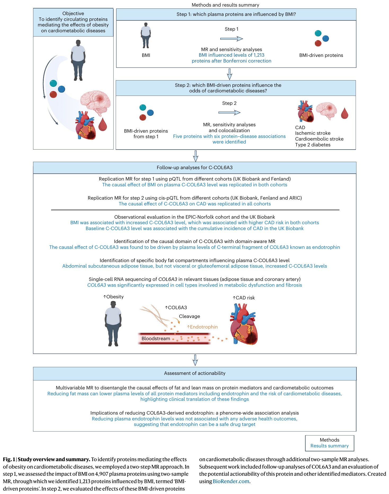
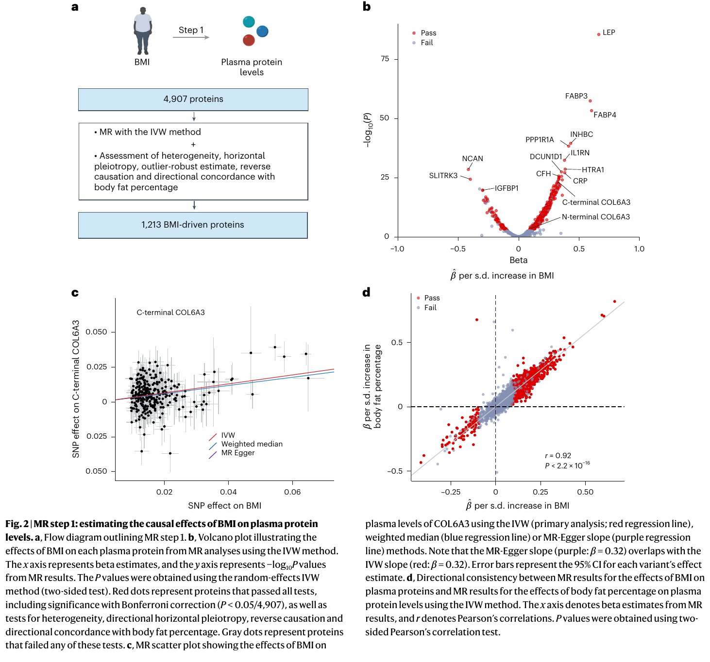
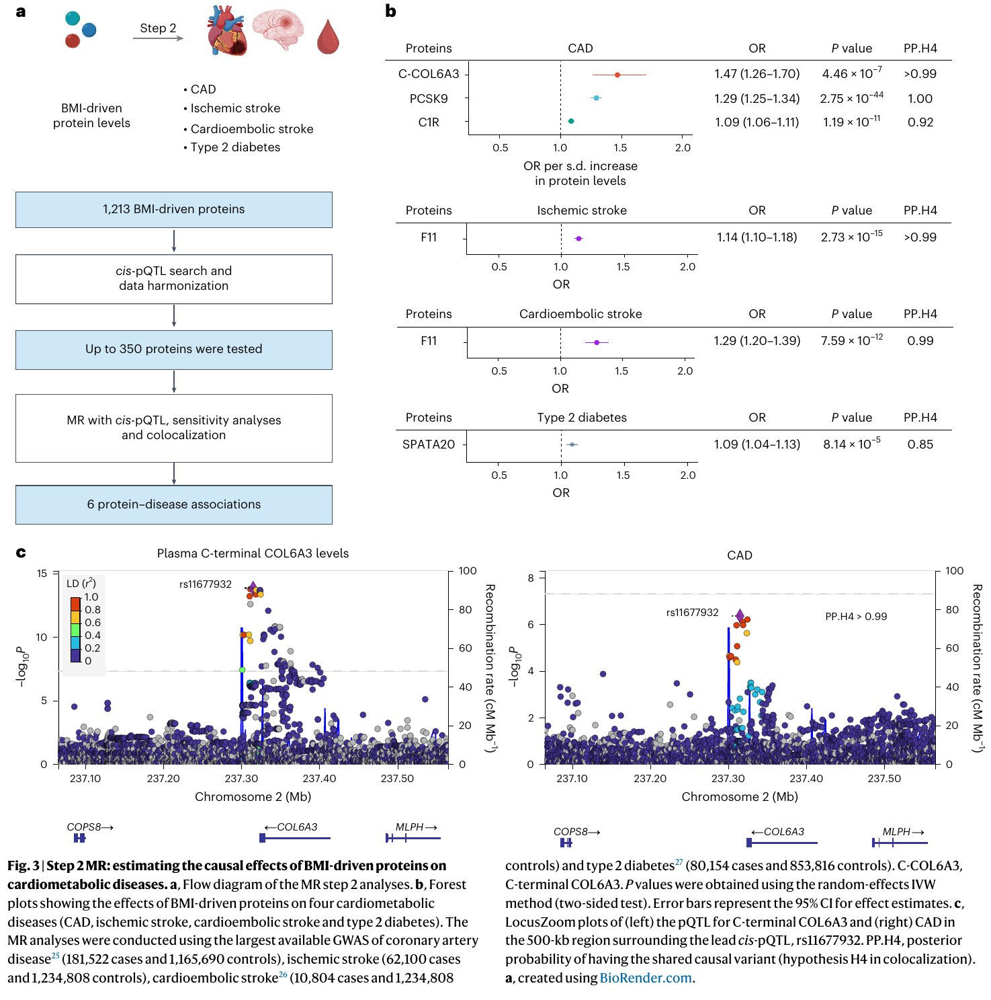
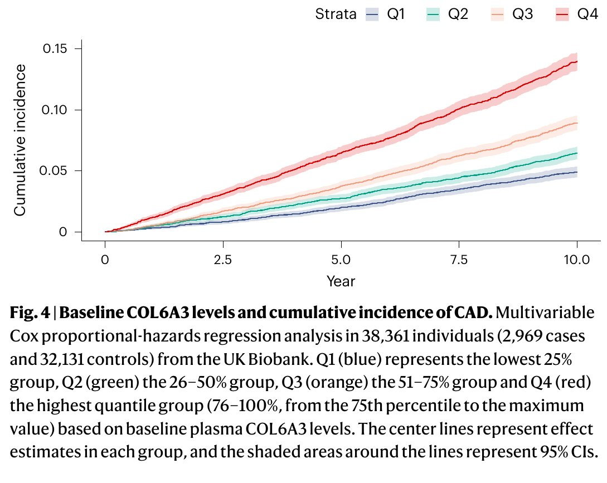
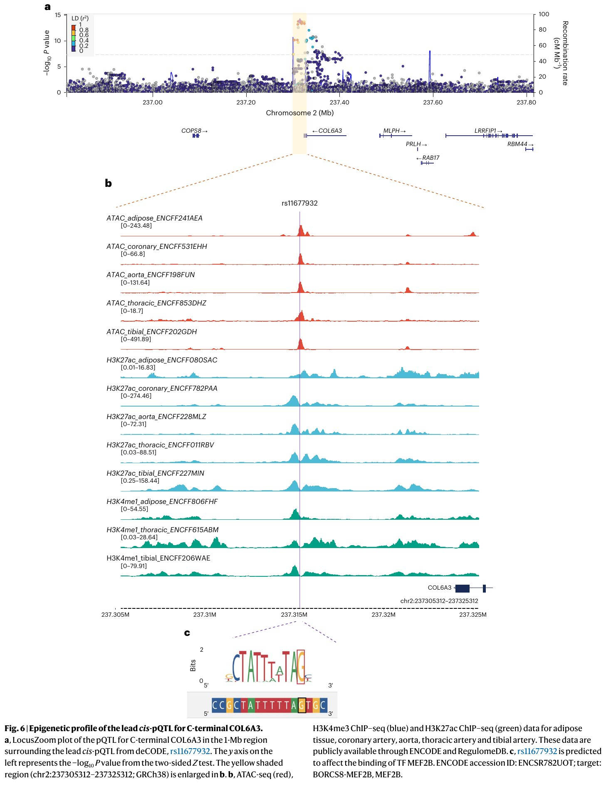
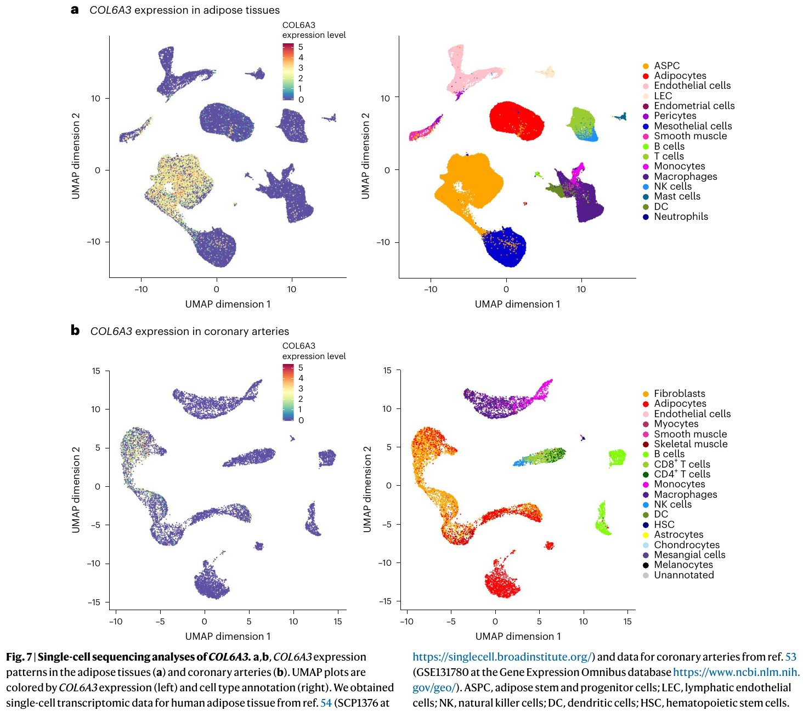
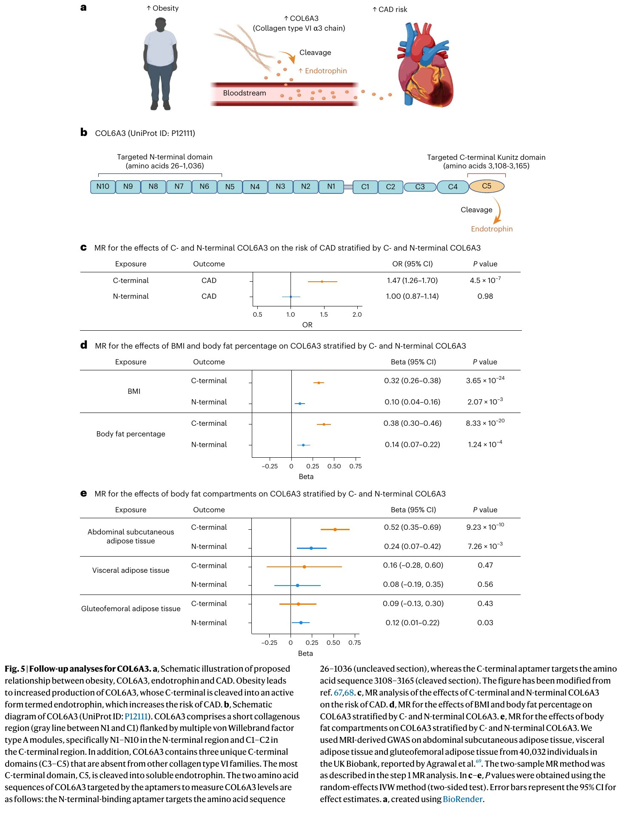
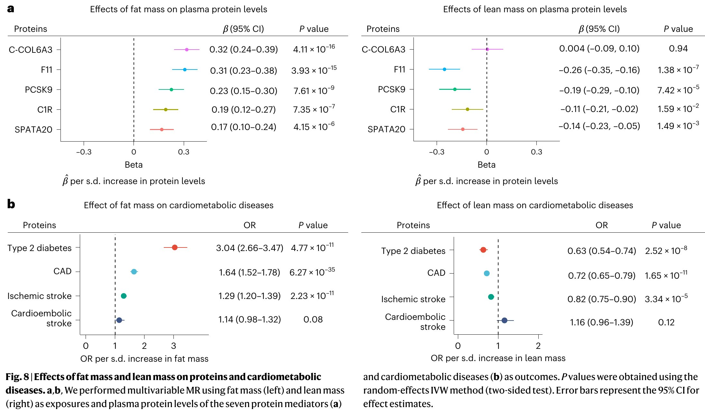

肥胖为什么会导致心脏病和糖尿病？科学界知道两者强相关，但中间的"桥梁"——到底是什么生物分子在传递肥胖的危害信号——一直不清楚。这篇论文的核心思路是：用基因作为"自然随机化实验"的工具，在约5000个血液蛋白质中逐一排查，找出那些被肥胖水平升高、同时又直接增加冠心病风险的蛋白质。最终锁定了一个关键分子：COL6A3蛋白的C端裂解产物——Endotrophin。
📖 原文出处：阅读导引| 维度 | Yoshiji et al. (2025) | STROBE-MR (JAMA 2021) |
|---|---|---|
| 性质 | MR 应用研究（蛋白中介发现） | MR 报告规范（检查清单） |
| 关系 | 互补（Complements） | 互补（Complements） |
| 共享概念 | 双样本MR、IV三大假设、水平多效性检验、敏感性分析、逆方差加权法、共定位分析 | |
| Yoshiji 独有 | 两步MR中介分析、蛋白组范围MR (proteome-wide MR)、pQTL工具变量、cis/trans-pQTL、结构域感知MR、多变量MR脂肪/瘦体质量分离 | — |
| 如何配合阅读 | 先读 STROBE-MR 理解 MR 研究的基本框架和报告要求，再用本文看一个高标准 MR 中介分析的实际范例 | |
| 符号/缩写 | 含义 |
|---|---|
| MR | Mendelian Randomization，孟德尔随机化 |
| BMI | Body Mass Index，身体质量指数（肥胖的代理指标） |
| IVW | Inverse-Variance Weighted，逆方差加权法（MR主分析方法） |
| pQTL | Protein Quantitative Trait Loci，蛋白数量性状位点（影响蛋白水平的遗传变异） |
| cis-pQTL | 位于编码基因转录起始位点 ±1Mb 范围内的 pQTL |
| trans-pQTL | 位于编码基因远端（>1Mb）的 pQTL |
| CAD | Coronary Artery Disease，冠心病 |
| T2D | Type 2 Diabetes，2型糖尿病 |
| COL6A3 | Collagen Type VI Alpha 3，VI型胶原蛋白α3链 |
| OR | Odds Ratio，比值比 |
| PP.H4 | 共定位分析中共享因果变异的后验概率 |
| GWAS | Genome-Wide Association Study，全基因组关联研究 |
全世界有超过19亿人超重或肥胖。肥胖是冠心病、脑卒中和2型糖尿病的强烈风险因素——这已经是常识。但问题是：肥胖通过什么中间分子来损害心血管？这就像一个黑箱：一头输入肥胖，另一头输出心脏病，中间发生了什么我们不清楚。如果找到这些"中间信使"，我们就可能通过药物来阻断这条损害链路。
📖 原文出处：阅读导引具体而言，论文提出的核心科学问题是：
选择血浆蛋白作为"中间信使"的候选有四个理由：
本研究建立在以下关键数据资源之上：
研究的核心逻辑链：肥胖 → [血液蛋白变化] → 心血管代谢疾病。目标是用人类遗传学数据找到方括号中的关键蛋白，并评估其作为药物靶点的潜力。
📖 原文出处：阅读导引孟德尔随机化的核心类比是：基因的随机分配就像随机对照试验（RCT）中的随机分组。一个人的基因型在受精时就确定了，不受后天混杂因素（饮食、运动、社会经济状态）的影响，也不会被疾病"反向改变"。因此，如果我们找到影响BMI的基因变异，再看携带不同变异的人是否在蛋白水平和疾病风险上有差异，就能推断出因果链条。
📖 原文出处：阅读导引在进入逐节拆解之前，先看原论文 Figure 1——它是整项研究的"路线图"：从科学问题到两步 MR 设计，再到 COL6A3 的深度追踪与可操作性评估，一图囊括；后续各节的讲解均可对照本图定位。

原论文 Figure 1：研究设计总览与结果摘要。整图自上而下分四层。最上层为研究目标（Objective）与方法-结果摘要栏。第二层是两步 MR 主体：Step 1 用双样本 MR 评估 BMI 对 4,907 种血浆蛋白的因果效应，经 Bonferroni 校正与敏感性分析筛出 1,213 种"BMI 驱动蛋白"；Step 2 再评估这些蛋白对 CAD、缺血性卒中、心源性卒中与 2 型糖尿病风险的因果效应，最终锁定 5 种蛋白、6 个蛋白-疾病关联。第三层是围绕 C-COL6A3 的追踪分析（跨队列复制、观察性验证、因果结构域定位、体脂区室分析、单细胞测序），对应本文第 5–6 节。底层机制图点明核心结论：肥胖上调 COL6A3，其 C 端被酶切释放 Endotrophin 进入血流，进而升高 CAD 风险；最末两栏展示可操作性评估（多变量 MR 分离脂肪/瘦体质量效应、PheWAS 安全性筛查），对应第 7 节。图中箭头方向即因果作用方向，与 2.2 节文字描述的流程完全对应。
图源：Yoshiji et al., Nature Genetics (2025)。
使用BMI的GWAS（n=681,275）作为暴露数据，deCODE蛋白GWAS（n=35,559）作为结局数据，估计BMI对每种蛋白水平的因果效应。使用逆方差加权法（IVW）进行主分析，Bonferroni校正阈值 $P < 1.0 \times 10^{-5}$。
📖 原文出处：阅读导引将Step 1中通过显著性检验的蛋白（BMI-driven proteins）作为暴露，以冠心病（CAD, 181,522例/1,165,690对照）、缺血性脑卒中（62,100例）、心源性脑卒中（10,804例）和2型糖尿病（80,154例）作为结局，评估每种蛋白对疾病的因果效应。
📖 原文出处：阅读导引遗传变异影响蛋白水平有两条路：近距离（cis）和远距离（trans）。cis-pQTL 位于编码该蛋白的基因附近（±1Mb），它们直接影响该基因的表达或蛋白结构。trans-pQTL 位于基因组的远端——可能是通过调控其他基因来间接影响——更容易存在水平多效性（即通过无关途径影响疾病）。因此，本研究严格限制在cis-pQTL，以最大限度保证MR的"排他性"假设（工具变量仅通过暴露影响结局）。
📖 原文出处：阅读导引原论文 Figure 2 把 Step 1 的分析流程和代表性结果浓缩为四个面板——它是本节（3.1–3.3）所有关键数字的原始出处。

原论文 Figure 2：Step 1 MR——BMI 对血浆蛋白水平的因果效应。(a) Step 1 流程图：以 BMI 为暴露、4,907 种血浆蛋白为结局，IVW 主分析并配套异质性、水平多效性、离群稳健估计、反向因果与体脂百分比方向一致性五类检验，筛出 1,213 种 BMI 驱动蛋白。(b) 火山图：横轴为 IVW 效应估计 β，纵轴为 −log10(P)；红点为通过全部检验的蛋白（Bonferroni 阈值 P < 0.05/4,907），灰点为任一检验未通过的蛋白——右上角的 LEP（瘦素）等已知肥胖相关蛋白即方法学阳性对照。(c) MR 散点图（以 C 端 COL6A3 为例）：每个点为一个遗传变异对 BMI 与蛋白水平的效应，三条回归线分别为 IVW（红）、加权中位数（蓝）与 MR-Egger（紫），斜率即因果效应估计。(d) 方向一致性检验：横轴为 BMI 对各蛋白的 MR 效应，纵轴为体脂百分比对同一蛋白的 MR 效应，两者高度相关（r=0.92, P<2.2×10⁻¹⁶）——说明结果并非 BMI 这一个肥胖指标的偶然产物。
图源：Yoshiji et al., Nature Genetics (2025)。
在对4,907种血浆蛋白进行MR分析后，发现BMI因果性地影响了1,213种蛋白的水平（占总数的24.7%），全部通过了Bonferroni校正和敏感性分析。
SomaScan v4 平台上有两种不同的适配体（aptamers）分别靶向 COL6A3 蛋白的C端和N端区域。MR Step 1 的结果显示：
这个差异暗示，COL6A3的活性形式可能主要来自其C端裂解产物。
📖 原文出处：阅读导引为保证Step 1 MR结果的可靠性，对每个蛋白的MR结果进行了5项敏感性检验：
本研究中所有工具变量的F统计量均>10（常规阈值），且大多数远高于此值，排除了弱工具变量偏倚的可能。
Step 1 确认了1,213种被BMI因果性调控的血浆蛋白，覆盖了代谢、炎症、细胞外基质等多种生物学通路。其中，LEP（瘦素）作为阳性对照（已知肥胖上调瘦素），从侧面验证了方法学的可靠性。
📖 原文出处：阅读导引Step 2 将1,213种BMI驱动蛋白限制为有cis-pQTL数据可用的最多350种蛋白，然后对每种疾病结局分别进行MR分析。经过MR+敏感性分析+共定位分析（PP.H4>0.8），最终鉴定出9个蛋白-疾病关联（涉及5种不同的蛋白）。
Step 2 的完整流程与全部核心结果汇总在原论文 Figure 3 中——本节（4.1–4.3）的讲解均围绕这张图展开。

原论文 Figure 3：Step 2 MR——BMI 驱动蛋白对心血管代谢疾病的因果效应。(a) Step 2 流程图：将 1,213 种 BMI 驱动蛋白经 cis-pQTL 检索与数据协调后最多保留 350 种，逐一做 MR + 敏感性分析 + 共定位分析。(b) 森林图：展示通过全部检验的蛋白对四种结局——CAD、缺血性卒中、心源性卒中与 2 型糖尿病——的效应（每个结局使用当时最大规模 GWAS，样本量见图中标注）；C-COL6A3 升高 CAD 风险（OR 1.47, 95% CI 1.26–1.70, P=4.46×10⁻⁷, PP.H4>0.99）、PCSK9 升高 CAD 风险（PP.H4=1.00）、F11 升高缺血性卒中（OR 1.14）与心源性卒中（OR 1.29）风险、SPATA20 升高 2 型糖尿病风险（PP.H4=0.85）；误差线为 95% CI（随机效应 IVW 双侧检验）。(c) LocusZoom 共定位图：lead cis-pQTL rs11677932 周围 500-kb 区域内，C 端 COL6A3 的 pQTL 信号（左）与 CAD 的 GWAS 信号（右）峰形重合，共享因果变异的后验概率 PP.H4 > 0.99——4.2 节表格中"共定位 PP.H4"一栏即来源于此。
图源：Yoshiji et al., Nature Genetics (2025)。
| 蛋白 | 疾病结局 | OR (每1 SD增加) | P值 | 共定位 PP.H4 |
|---|---|---|---|---|
| C-COL6A3 | 冠心病 (CAD) | 1.47 (1.26–1.70) | 4.46×10⁻⁷ | >0.99 |
| PCSK9 | 冠心病 (CAD) | 1.26 (1.14–1.40) | 5.1×10⁻⁶ | >0.99 |
| F11 | 缺血性脑卒中 | 1.14 (1.10–1.18) | 2.73×10⁻¹⁵ | >0.99 |
| F11 | 心源性脑卒中 | 1.29 (1.20–1.39) | 7.59×10⁻¹² | 0.99 |
| SPATA20 | 2型糖尿病 | 1.12 (1.07–1.17) | 1.1×10⁻⁶ | >0.99 |
PCSK9（前蛋白转化酶枯草溶菌素9）是一个已经被临床验证的冠心病药物靶点——PCSK9抑制剂（evolocumab, alirocumab）已获批用于降低LDL-C和预防心血管事件。本研究鉴定出BMI → PCSK9 ↑ → CAD风险 ↑ 的因果链路，与已知的药理学机制完全吻合，为整个方法学框架提供了强有力的阳性对照验证。
📖 原文出处：阅读导引由于BMI对心血管代谢疾病的总体效应是增加风险（BMI→CAD: OR=1.47; BMI→卒中: OR=1.19-1.21; BMI→T2D: OR=2.58），因此合理的中介蛋白应满足：BMI升高该蛋白，且该蛋白升高疾病风险——即 βBMI→蛋白 × β蛋白→疾病 > 0。
📖 原文出处：阅读导引在9个蛋白-疾病关联中，6个（包括COL6A3→CAD、PCSK9→CAD、F11→两种卒中、SPATA20→T2D等）满足方向一致性条件。
在所有中介蛋白中，C-COL6A3对CAD的效应最强（OR=1.47），超过了阳性对照PCSK9（OR=1.26）。而且C-COL6A3被BMI上调的幅度远大于N-COL6A3——这暗示C-COL6A3的裂解产物（endotrophin）可能是真正的效应分子。
📖 原文出处：阅读导引为确认COL6A3的发现不是deCODE数据的统计偶然，研究团队在三个独立队列中进行了复制：
| 分析 | 复制队列 | 平台 | 结果 |
|---|---|---|---|
| Step 1 复制 (BMI→COL6A3) |
UK Biobank (n=35,571)、Fenland (n=12,084) | Olink Explore 3072 | 两者均成功复制，效应方向一致 |
| Step 2 复制 (COL6A3→CAD) |
UK Biobank、Fenland、ARIC (n=7,213) | Olink + SomaScan | 三个队列全部复制，效应方向一致 |
在EPIC-Norfolk前瞻性队列（n=872，含207例CAD）和UK Biobank（n=38,361，10年随访）中：
原论文 Figure 4 把 UK Biobank 这条观察性证据画成了分位数生存曲线——基线 C-COL6A3 越高，CAD 累积发病率越高，一眼可辨。

原论文 Figure 4：基线 COL6A3 水平与 CAD 累积发病率（UK Biobank 观察性分析）。38,361 人（2,969 例 CAD、32,131 例对照）按基线血浆 C-COL6A3 水平分为四组：Q1（蓝，最低 25%）、Q2（绿，26–50%）、Q3（橙，51–75%）、Q4（红，最高分位组，76–100%）。纵轴为 CAD 累积发病率，横轴为随访年数；中心线为各组效应估计，阴影带为 95% CI。Q4 组发病率最高、Q1 组最低（log-rank 检验 P<2.2×10⁻¹⁶），且多变量 Cox 回归显示 C-COL6A3 每升高 1 SD，CAD 风险增加 40%（HR 1.40, 95% CI 1.35–1.45）——即 5.2 节引述的观察性证据。需要强调：这是观察性关联，本身不能证明因果，其价值在于与两步 MR 的因果估计方向一致，构成三角互证。
图源：Yoshiji et al., Nature Genetics (2025)。
找到遗传变异只是第一步。接下来要追问：这个变异通过什么分子机制影响COL6A3的水平？这就像不光知道开关在哪，还要搞清楚里面的电路是怎么接的。
📖 原文出处：阅读导引对C-COL6A3的lead cis-pQTL（rs11677932）周围的表观基因组学分析发现：
上面这三层证据——开放染色质、活性组蛋白标记、转录因子结合——的原始数据全部来自原论文 Figure 6。

原论文 Figure 6：lead cis-pQTL（rs11677932）的表观基因组学画像。(a) LocusZoom 图：rs11677932 周围 1-Mb 区域内 C 端 COL6A3 的 pQTL 信号（deCODE 数据），纵轴为 −log10(P)（双侧 Z 检验），点色代表与 lead 变异的 LD（r²）；黄色阴影区即 (b) 的放大区间。(b) 染色质状态轨道（chr2:237,305,312–237,325,312, GRCh38）：红色为 ATAC-seq（开放染色质），蓝色为 H3K4me3、绿色为 H3K27ac ChIP-seq；自上而下依次为脂肪组织、冠状动脉、主动脉、胸动脉与胫动脉——可见 rs11677932 在脂肪与动脉组织中处于开放染色质且携带活性启动子/增强子标记，这是"该变异位于功能性调控元件内"的直接证据。(c) 转录因子结合预测：rs11677932 落在 MEF2B 的结合模体中，等位基因变化可能改变 MEF2B 的结合亲和力（ENCODE 编号 ENCSR782UOT）。
图源：Yoshiji et al., Nature Genetics (2025)。
表观基因组学分析不是从单个实验得出"这个 SNP 调控 COL6A3"的结论，而是通过三层独立证据链逐步收敛：
关键逻辑链：如果三层证据在同一组织、同一方向上都指向 COL6A3，那么这个 SNP 就不仅是一个"统计学上显著"的变异——它有一个可解释的、可验证的分子机制。
📖 原文出处：阅读导引| 步骤 | 实验/数据 | 发现 | 生物学含义 |
|---|---|---|---|
| 1 | GWAS cis-pQTL 定位 | rs11677932 是 C-COL6A3 的 lead SNP（P 值最显著的变异） | rs11677932 所在的基因组区域与 COL6A3 蛋白水平在统计上显著关联——但此时我们不知道它是否"有功能"还是仅仅是 LD 的"搭车者" |
| 2 | ATAC-seq（开放染色质检测） | 该区域在脂肪组织、冠状动脉、主动脉中呈开放状态 | rs11677932 所在的 DNA 区域在这些代谢和心血管组织中物理上可被调控机器访问——如果它在所有组织中都处于关闭状态，它就不太可能具有功能性调控作用。脂肪组织和动脉组织的开放性特别重要，因为 COL6A3/endotrophin 在这些组织中活跃表达 |
| 3 | ChIP-seq（组蛋白修饰图谱） | H3K4me3（活性启动子）和 H3K27ac（活性增强子）在脂肪和动脉组织中高度富集 | 双重标记：H3K4me3 标记提示这是一个"准备启动"的区域（启动子）；H3K27ac 标记提示这是一个"正在被调控"的区域（增强子）。两个标记同时存在 = 这个位点是一个活跃的功能性调控元件，而不仅仅是基因组中的"背景噪音" |
| 4 | 转录因子结合预测（in silico） | rs11677932 可能影响转录因子 MEF2B 的结合 | SNP 的参考等位基因和替代等位基因可能对 MEF2B 的 DNA 结合亲和力不同——这为"为什么 A 等位基因的人 COL6A3 水平高于 G 等位基因的人"提供了分子解释。MEF2 家族已知在肌肉分化、脂肪细胞分化和心血管发育中发挥核心转录调控作用。如果 MEF2B 在该位点结合并调控 COL6A3 表达，这条通路就是"上游 TF → 增强子 SNP → 下游蛋白表达"的完整因果链 |
| 5 | 整合结论 | rs11677932 → COL6A3 水平的变化 具有表观基因组学上的分子机制支持 | 这条 SNP 不是"随机的统计学噪音"——它在代谢相关组织中处于开放染色质区域，带有活性增强子标记，且可能通过 MEF2 转录因子调控 COL6A3 表达。这使得后续两步 MR 的因果结论更加可信：SNP → 蛋白 → 疾病 的逻辑链不仅统计学上成立，分子生物学上也可解释 |
这五步构成了一个"统计显著 → 染色质可调控 → 活性调控元件 → 转录因子机制 → 因果解释"的完整证据闭环。在审稿和评估 MR 研究时，这种多层次的机制证据是区分"稳健发现"和"可能假阳性"的关键标准。
📖 原文出处：阅读导引5.3 节的表观基因组学分析回答了"为什么是 rs11677932？"这个深层问题。GWAS 只告诉你"这个 SNP 与 COL6A3 水平有关"（统计学显著），表观基因组学分析进一步告诉你"因为这个 SNP 位于一个有活跃调控功能的基因组区域，可能通过 MEF2B 转录因子调控基因表达"（生物学可解释）。在 MR 研究中，统计学证据（Wald ratio 的 p 值）和生物学证据（表观基因组学）的交叉验证，是因果推断最强的论证形式。
📖 原文出处：阅读导引COL6A3 究竟在哪些细胞类型里表达？原论文 Figure 7 给出了这一节结论的原始证据——脂肪组织与冠状动脉的单细胞图谱。

原论文 Figure 7：COL6A3 的单细胞测序分析。(a) 脂肪组织与 (b) 冠状动脉的单细胞 UMAP 图；每一行左列为按 COL6A3 表达水平着色的 UMAP（暖色表示高表达），右列为按细胞类型注释着色的 UMAP。(a) 中 COL6A3 在脂肪干细胞与前体细胞（ASPC）及成纤维细胞中显著高表达——它们是脂肪组织纤维化的关键驱动者；(b) 中 COL6A3 富集于平滑肌细胞与成纤维细胞——它们是动脉粥样硬化斑块形成的关键执行者。这说明 COL6A3 在"肥胖→脂肪组织纤维化→代谢紊乱"与"血管纤维化→斑块"两条通路上都有表达基础，与 5.4 节正文的解读一致。数据来源：脂肪组织取自 SCP1376（Broad 单细胞门户），冠状动脉取自 GSE131780（GEO 数据库）。
图源：Yoshiji et al., Nature Genetics (2025)。
利用公开的单细胞RNA-seq数据（Nathan et al., SCP498），分析发现：
这意味着COL6A3在"肥胖→脂肪组织纤维化→系统性代谢紊乱"和"血管纤维化→动脉粥样硬化"两条通路中都扮演关键角色。
📖 原文出处：阅读导引通过跨队列MR复制、观察性验证、表观基因组学、单细胞RNA测序四个层次的正交证据，COL6A3（尤其是其C端区域）被牢牢锁定为肥胖→CAD通路中的关键中介分子。
📖 原文出处：阅读导引本节要回答的问题是：COL6A3 的致病效应究竟落在哪个结构域？原论文 Figure 5 用五个面板给出完整答案——从蛋白结构域图谱到结构域特异 MR，再到体脂区室定位，一图到底，可与 6.1–6.3 节的讲解逐段对照。

原论文 Figure 5：COL6A3 的追踪分析——从结构域到体脂区室。(a) 机制示意：肥胖促使 COL6A3 生成增多，其 C 端被酶切为活性片段 Endotrophin 进入血流，进而升高 CAD 风险。(b) COL6A3（UniProt P12111）结构域图谱：N 端含 N1–N10 十个 von Willebrand factor A 型模块，C 端含 C1–C2 模块及 COL6A3 独有的 C3–C5 结构域，最末端的 C5 被切下即形成可溶性 Endotrophin；SomaScan 的两个适配体分别靶向 N 端（氨基酸 26–1,036，未被切割的部分）与 C 端（氨基酸 3,108–3,165，被切割的部分）——这也是"两种 COL6A3"测量值的由来。(c) 结构域感知 MR：C 端 COL6A3 每升高 1 SD，CAD 风险升高 47%（OR 1.47, 95% CI 1.26–1.70, P=4.5×10⁻⁷），而 N 端完全无效应（OR 1.00, 95% CI 0.87–1.14, P=0.98）——致病效应集中且仅集中在 C 端。(d) BMI 与体脂百分比对 C/N 端 COL6A3 的 MR：两者对 C 端的效应（BMI β=0.32；体脂百分比 β=0.38）均远强于对 N 端的效应（β=0.10 与 0.14）。(e) 体脂区室分析：仅腹部皮下脂肪组织显著升高 C 端 COL6A3（β=0.52, 95% CI 0.35–0.69），内脏与臀股部脂肪组织均无显著效应——与 6.3 节"苹果型肥胖更危险"的结论直接对应。误差线为 95% CI，P 值来自随机效应 IVW 双侧检验。
图源：Yoshiji et al., Nature Genetics (2025)。
COL6A3是一个大蛋白，全长3,177个氨基酸。它被分泌后会在体内被切割成不同片段。SomaScan平台上有两种适配体分别靶向C端和N端。既然C-COL6A3的MR效应显著强于N-COL6A3，那真正有害的是C端被切下来的那个片段——Endotrophin（内皮营养素）。
📖 原文出处：阅读导引VI型胶原蛋白（Collagen VI）由三条α链（α1, α2, α3）组成异源三聚体。其中COL6A3（α3链）最大，包含多个结构域：
Endotrophin是COL6A3的C端裂解产物（约76kDa），由基质金属蛋白酶（MMP）或骨形态发生蛋白1（BMP-1）在细胞外切割COL6A3产生。已有文献报道Endotrophin在肥胖相关的脂肪组织纤维化、胰岛素抵抗和肿瘤进展中发挥重要作用。
📖 原文出处：阅读导引Endotrophin通过以下多种机制促进动脉粥样硬化：
这就像一个"多重打击"模型——Endotrophin同时从纤维化、炎症、内皮功能和代谢四个维度推动冠状动脉粥样硬化的进展。
📖 原文出处：阅读导引有趣的是，并非所有身体部位的脂肪都同等增加COL6A3水平。通过脂肪分布特异性的MR分析：
这表明腹部皮下脂肪组织是Endotrophin的主要来源，与临床观察一致——中心性肥胖（"苹果型"）比下半身肥胖（"梨型"）心血管风险更高。
Domain-aware MR 精准锁定了COL6A3的C端裂解产物Endotrophin为真正的致病分子。这为药物开发提供了明确的靶点方向——不是要去抑制整个COL6A3蛋白（可能会影响正常的细胞外基质功能），而是特异性地阻断Endotrophin的产生或其下游信号。
📖 原文出处：阅读导引如果我们发现Endotrophin是肥胖伤害心脏的"中间信使"，下一个问题自然是：减肥能降低Endotrophin水平吗？研究团队使用多变量MR（MVMR）来回答这个问题。
📖 原文出处：阅读导引在标准单变量MR中，我们只能一次估计一个暴露对结局的因果效应。MVMR允许同时将多个相关的暴露（如脂肪质量和瘦体质量）纳入同一个模型，从而估计每个暴露在控制其他暴露后的独立因果效应。
📖 原文出处：阅读导引MVMR分析结果显示：
原论文 Figure 8 正是这组多变量 MR 的森林图汇总——左半张是脂肪质量的效应，右半张是瘦体质量的效应，对比之下"减脂而非减肌"的结论一目了然。

原论文 Figure 8：脂肪质量与瘦体质量对中介蛋白和心血管代谢疾病的多变量 MR。(a) 以脂肪质量（左）与瘦体质量（右）为暴露、7 种中介蛋白为结局：脂肪质量显著升高全部中介蛋白（C-COL6A3 β=0.32、F11 β=0.31、PCSK9 β=0.23、C1R β=0.19、SPATA20 β=0.17，均为每 1 SD 脂肪质量的效应），瘦体质量则降低其中若干蛋白（F11 β=−0.26、PCSK9 β=−0.11、C1R β=−0.14、SPATA20 β=−0.19）且对 C-COL6A3 无效（β=0.004, P=0.94）。(b) 以疾病为结局：脂肪质量升高 2 型糖尿病（OR 3.04）、CAD（OR 1.64）与缺血性卒中（OR 1.29）风险，瘦体质量则降低这些风险（T2D OR 0.63、CAD OR 0.72、缺血性卒中 OR 0.82）。两张图合并读出同一个结论：驱动蛋白中介与疾病风险的是脂肪而非瘦体质量——减脂即可同时下调中介蛋白水平与心血管代谢疾病风险。误差线为 95% CI，P 值来自随机效应 IVW 双侧检验。
图源：Yoshiji et al., Nature Genetics (2025)。
一个好的药物靶点不仅要有疗效，更重要的是安全——抑制它不能引起严重的副作用。研究团队用genetically proxied Endotrophin降低来模拟"药物抑制Endotrophin"的效果，然后在数千种表型中排查潜在的不良反应。
结果令人振奋：降低Endotrophin水平在PheWAS中没有与任何不良健康结局显著关联。这意味着靶向Endotrophin的药物可能具有良好的安全性。
📖 原文出处：阅读导引Endotrophin 作为潜在的药物靶点具有几个优势：
尽管MR结果令人鼓舞，但从遗传关联到临床药物还有很长的路要走。主要的局限性包括：(1) 遗传预测的"终身效应"可能不等于药物短期抑制的效应；(2) COL6A3的完全敲除可能导致肌肉营养不良（已知COL6A3突变导致Bethlem肌病和Ullrich先天性肌营养不良），因此需要部分抑制或特异性阻断Endotrophin的释放；(3) MR分析限于欧洲血统人群，在其他血统中的推广性有待验证。
📖 原文出处：阅读导引可操作性评估表明：(1) 减脂可降低所有蛋白中介水平，(2) 降低Endotrophin可能是安全有效的CAD预防策略，(3) Endotrophin满足了人类遗传学验证药物靶点的多项标准。
📖 原文出处：阅读导引肥胖通过升高 COL6A3 的C端裂解产物 Endotrophin 来增加冠心病风险，而减脂可以降低Endotrophin水平，为心血管疾病的预防和治疗提供了新的可成药靶点。
📖 原文出处：原文相关章节| 数字 | 含义 |
|---|---|
| 4,907 | MR Step 1 检测的血浆蛋白总数 |
| 1,213 | 被BMI因果性调控的蛋白数（BMI-driven proteins） |
| ~350 | 有可用的cis-pQTL用于Step 2 MR的蛋白数 |
| 5 | 最终鉴定的中介蛋白数（6个蛋白-疾病关联） |
| OR=1.47 | C-COL6A3每增加1 SD对CAD的比值比（效应最强） |
| 94.7% | BMI与体脂百分比在蛋白效应方向上的吻合率（r=0.92） |
| >0.99 | COL6A3-CAD共定位分析的后验概率（PP.H4） |
这篇论文是蛋白组范围MR研究的方法学范本，值得学习的设计要素包括：